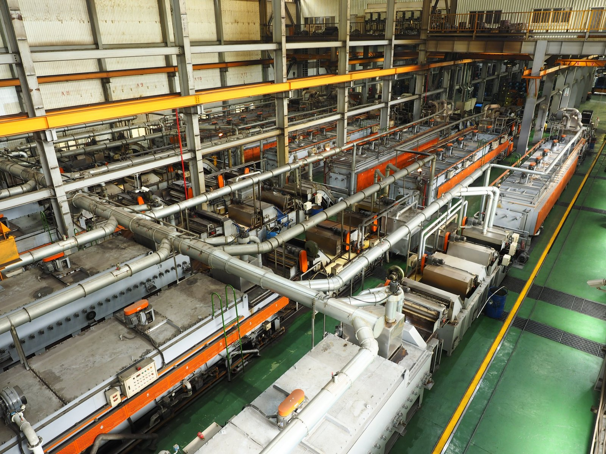
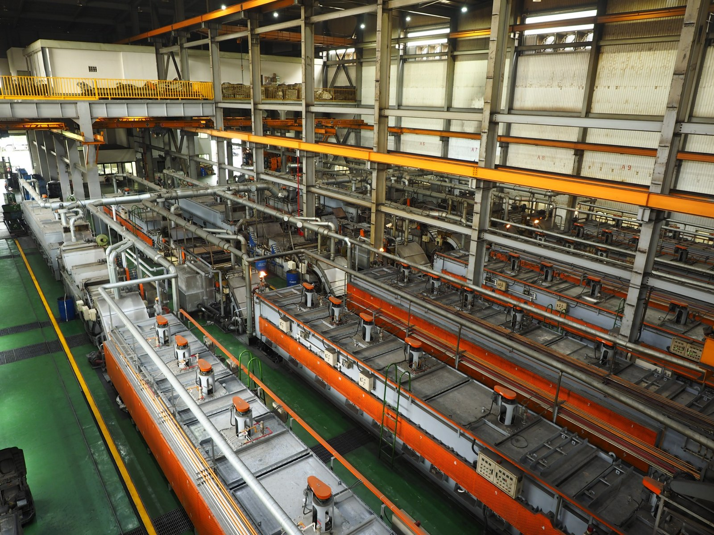
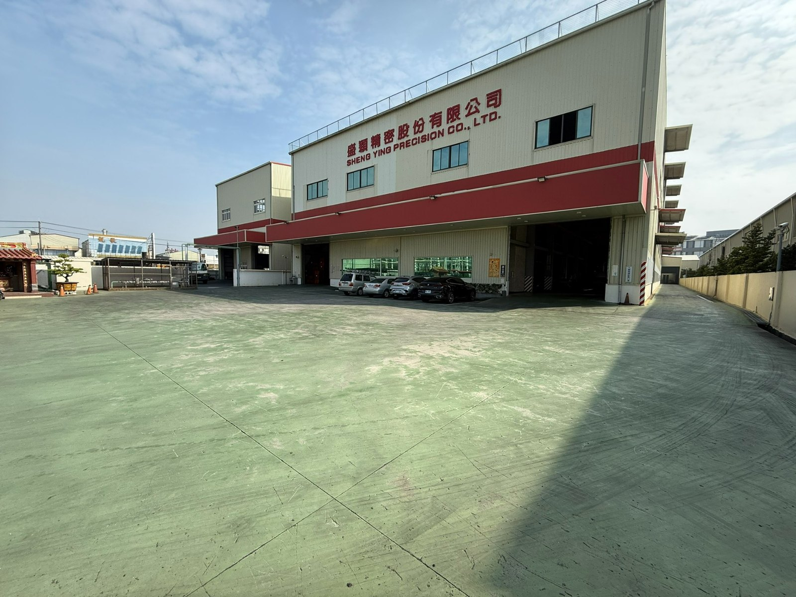

生產線
7 條連續式熱處理爐產線
本公司設有 7 條連續式熱處理爐產線，具備快速大量生產與製程彈性調度能力，可穩定支援扣件產品之連續化量產。
- 淬火爐：電熱系統
- 回火爐：天然氣系統
- 保護氣體：甲醇裂解氣
- 淬火方式：油淬處理

廠區環境


以真實設備與廠房照片輔助採購評估，降低初次合作的不確定性。
生產線
本公司設有 7 條連續式熱處理爐產線，具備快速大量生產與製程彈性調度能力，可穩定支援扣件產品之連續化量產。



以真實設備與廠房照片輔助採購評估，降低初次合作的不確定性。